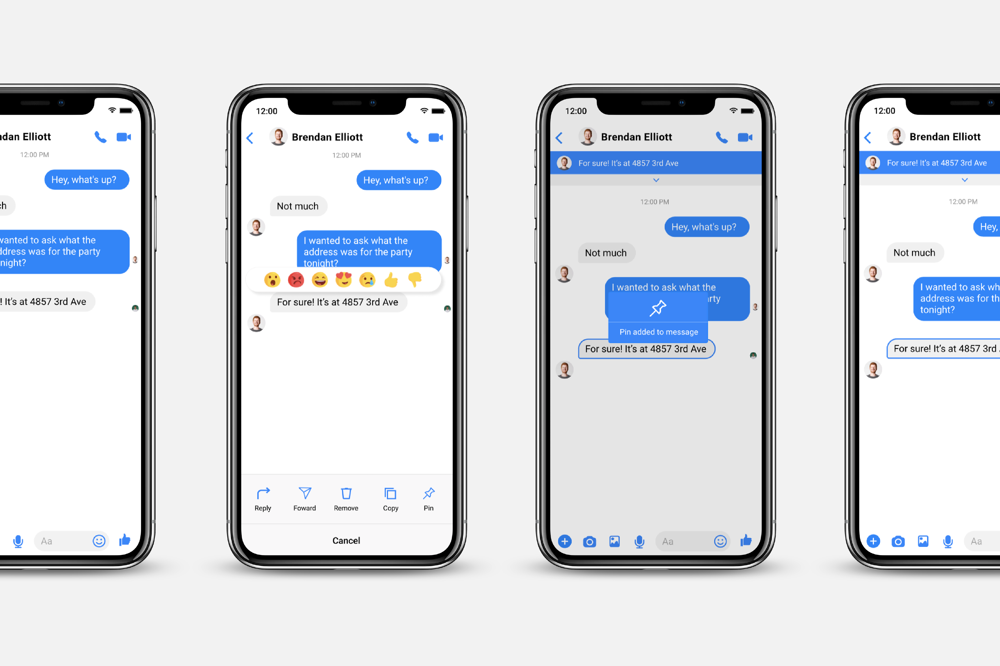
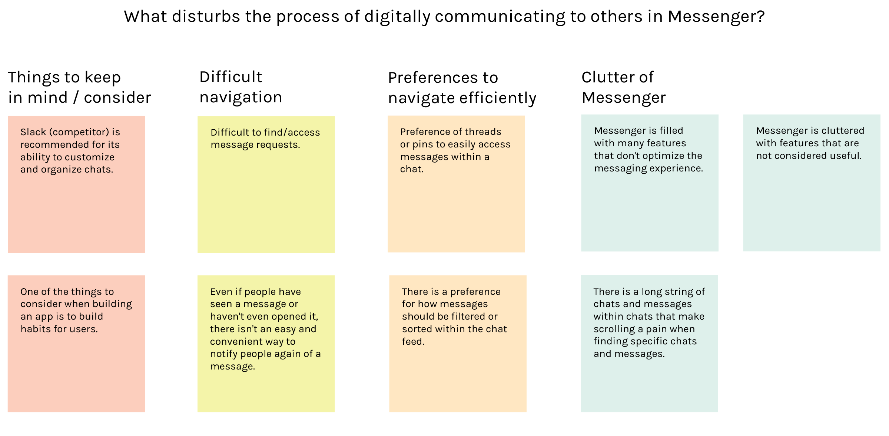
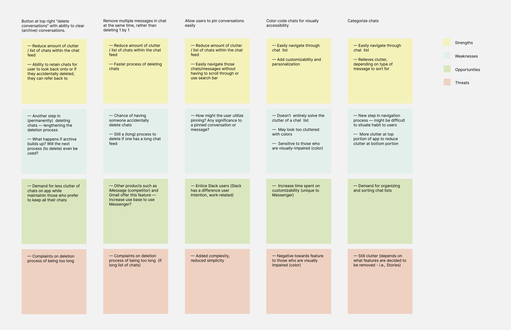
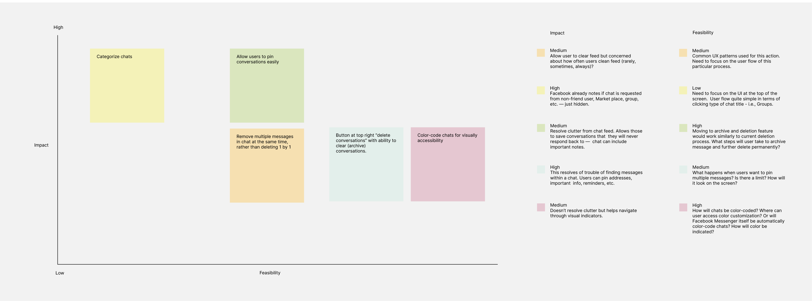
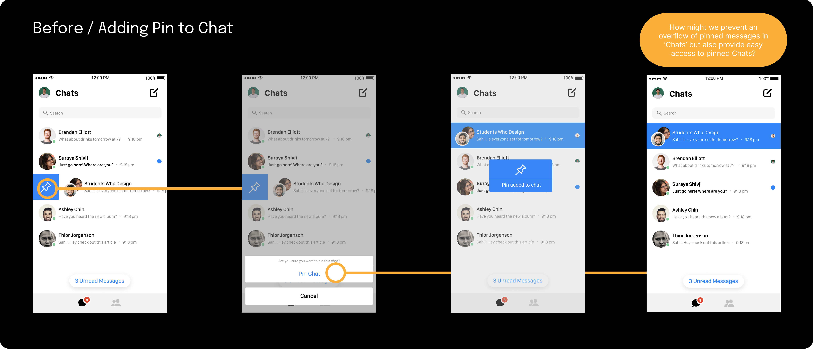
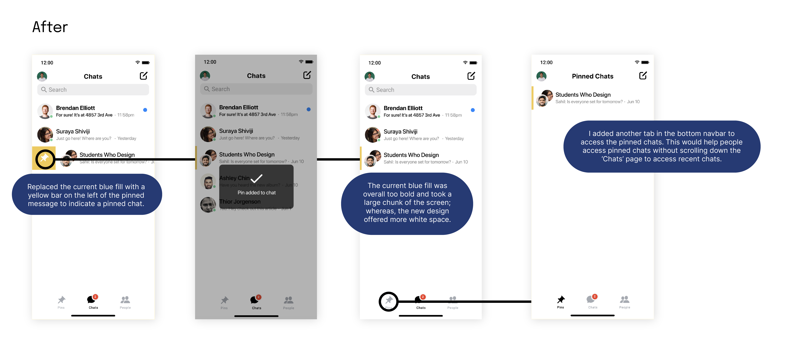
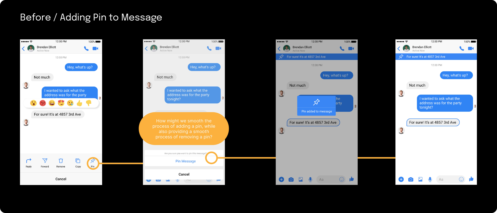
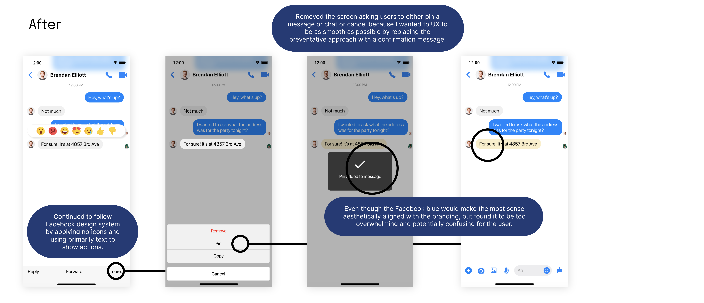
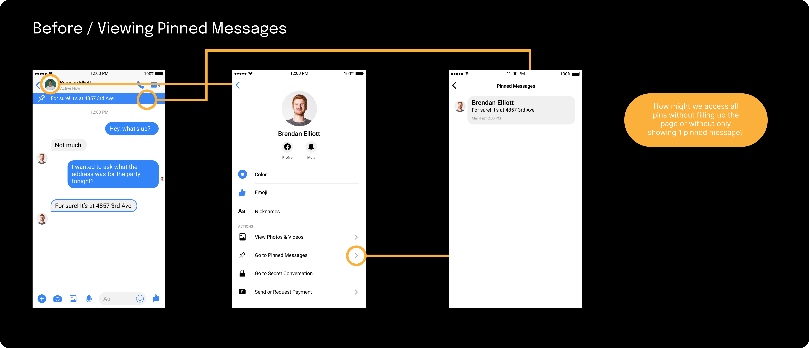
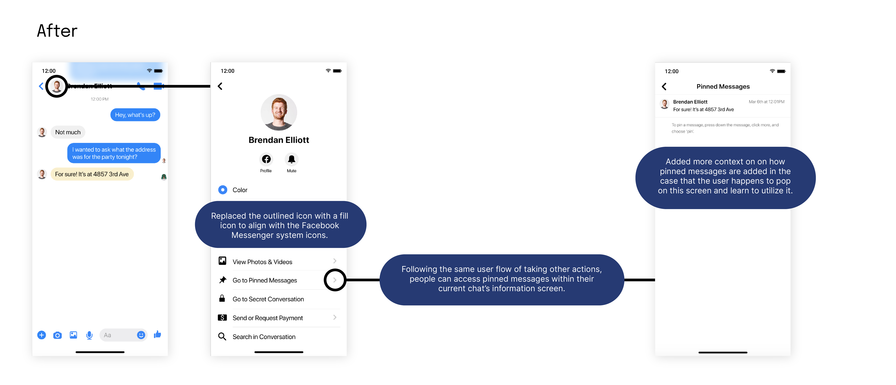

Case Study — 2020
Pin Items in Messenger

Messenger is a messaging app and platform. At its core, Messenger helps you instantly reach the people you’re close to without a data plan, for free. My goal was to improve the navigation of certain chats and messages with pins.
Role
Graphic DesignerUser Researcher
UX Designer
Tools
Adobe DrawAdobe Illustrator
Adobe XD
Timeline
3 weeks, Feb to Mar 2020
Problem
Research
One similarity that all interviewees faced was that they all used Slack as another mode of communication, and preferred it's customization to organize messages through threads, channels, and pins.

Affinity map from user interviews and app reviews.
I compiled the pain points commonly faced to brainstorm possible solutions.
01 — Messenger distances itself from competitors by offering many features to further personalize the chatting experience. However, with those new features, it can be difficult to navigate through conversations and messages.
02 — The process to navigate a message or chat is a long process that can be simplified.
03 — Messenger contains many features that don't focus on optimizing the user goal - accessing messages efficiently and having the app related to only messages.
04 — There is a need for users to sort chats and pin specific messages for user accessibility.
02 — The process to navigate a message or chat is a long process that can be simplified.
03 — Messenger contains many features that don't focus on optimizing the user goal - accessing messages efficiently and having the app related to only messages.
04 — There is a need for users to sort chats and pin specific messages for user accessibility.
Back to Problem Space
People want to access chats and messages in simple and quick steps, but they have difficulty navigating through the clutter of Messenger's features and the long string of chats.
Searching a specific message in a conversation can be lost when not remembered.
When it came to searching through messages, sometimes there is no recollection of the message specificity. For example, my friend wanted to know which Korean BBQ location we were going to be meeting at searching 'kbbq' in the conversation was not specific enough to get the location right away.
Looking towards Slack's way of pinning messages.
Going back through the interviews and discussing with peers, I found that Slack was a prime example of providing a product that allows users to easily navigate through their chats.
As an avid user of Messenger and Slack, I was able to see the successful use of a 'pin' product within current communities and channels I was part of, and decided to take inspiration from this feature.
As an avid user of Messenger and Slack, I was able to see the successful use of a 'pin' product within current communities and channels I was part of, and decided to take inspiration from this feature.
Brainstorm
I started with 30 ideas and funneled them down to rest on one idea.
Taking the 6 out of 30 ideas that I felt would be most impactful, I did a SWOT and Feasibility / Impact analysis to decide which idea would be most practical to do in 3 weeks and would also provide the most impact in solving the problem of navigation.
Taking the 6 out of 30 ideas that I felt would be most impactful, I did a SWOT and Feasibility / Impact analysis to decide which idea would be most practical to do in 3 weeks and would also provide the most impact in solving the problem of navigation.

SWOT Analysis to note the strenths, weaknesses, opportunities, and threats of each idea.

Feasibility / Impact chart to reflect the impact of each idea as well as the practicality to finish in three weeks.
Solution
Allow users to pin and chats
and messages.
and messages.
For Messenger, I, along with my peers, found that memorizing important dates, places, links can be extremely difficult. We often resort to copy and paste the message in our endless doc of notes or a notepad. With an addition of the Messenger 'pin', this painstaking process of sliding through endless chats and messages would be reduced.
Mid-Fidelity and Feedback
When ideating and sketching possible user flows, I took in mind the content requirements needed to craft an efficient and feasible feature.
01 — Reduce the current clutter on Facebook Messenger by removing or relocating features that are rarely used by users to make space for pinned chats.
02 — Have the pin feature be visually accessible on the current screen, without adding more clutter to the Messenger Screen.
I primarily aimed to build upon Messenger's current features - e.g., adding on actions when clicking a Chat or message.
02 — Have the pin feature be visually accessible on the current screen, without adding more clutter to the Messenger Screen.
I primarily aimed to build upon Messenger's current features - e.g., adding on actions when clicking a Chat or message.

Wireframes, included with actions, feedback, and further questions to explore.
Most found the app to be a partial solution to navigating through conversations, but still found difficulty noting pinned chats.
One person suggested "having another category at the bottom of the Chats to access only pinned chats [because this will] help resolve the issue of pinning everything."
Instead of taking a preventative measure with the confirmation, I considered to offer any easier way to rectify the mistake, with an undo button.
Taking in mind this insight, I made major changes to the prototype to keep things accessible but also minimal.
Instead of taking a preventative measure with the confirmation, I considered to offer any easier way to rectify the mistake, with an undo button.
Taking in mind this insight, I made major changes to the prototype to keep things accessible but also minimal.






Final Prototype
Pin your important chats.
Have a project group or people you'd like to keep in sync with all the time? Pin those important chats.
Access your pinned chats in the pins tab.
Keep track of your pinned chats in the pins tab.
Streamline flow of pinning messages and chats.
Want to keep note of an important message?
Pin your messages to look back at later.
Pin your messages to look back at later.
Access pinned messages within your chat.
Following the same user flow of taking other actions, people can access pinned messages within their current chat’s information screen.
Outcome
This was an exciting and fun project for me to work on as it provides real value, involved a ton of research, and brought close attention to interactions. This was my first individual product case study and I learned some important takeaways from this project related to working on projects, in general:
Dial on a product with scalability and and ways to reengage the product.
What is the purpose and intent of the product? What other opportunities can I turn and explore with this solution? Prior to starting this project, I crafted a quick solution (enable multiple deletions of chats) and went over it with my mentor, who later suggested for me to go back towards the problem and figure out a product rather than a minor feature. Enabling people to pin chats and messages provides an alternative way to search back at important points, whereas deleting multiple chats only resolved clearing out one's message box.When finding users to interview or test on, always have an uncommon user — someone who isn’t a primary user of the product e.g. uses the product in a non-conventional way.
To keep note of any edge or wild cases of outlier users, it was good to interview those you used Messenger in an uncommonly way.Taking further steps to solidify a concrete idea and ultimate solution.
I took measures to make sure the derived solution was practical and would provide high impact by creating a SWOT analysis and Feasibility / Impact chart with my ideas.Next steps
Apply additional research methods.
To further improve on the feature, conducting other additional research methods such as A/B Testing or click analysis would help get more feedback and prove if the new feature is actually efficient.Exploring alternative ways to view all pinned messages within a chat.
Although my solution followed the same task flow of other actions such as delete or reply and viewing more information about the chat (sending payment, looking at photos, etc.), the process to view chats is out of reach, compared to the initial wireframe. How might we still reengage pinned messages in a shorter and more efficient amount of time?